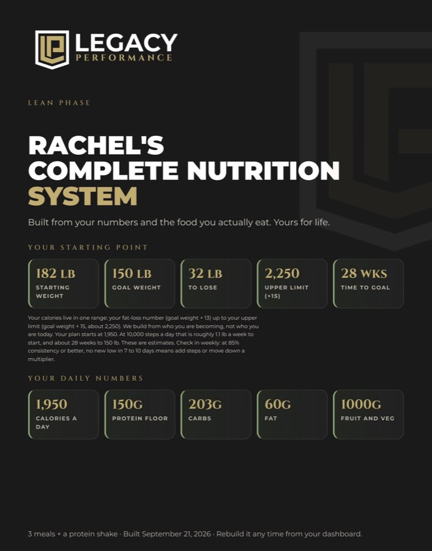
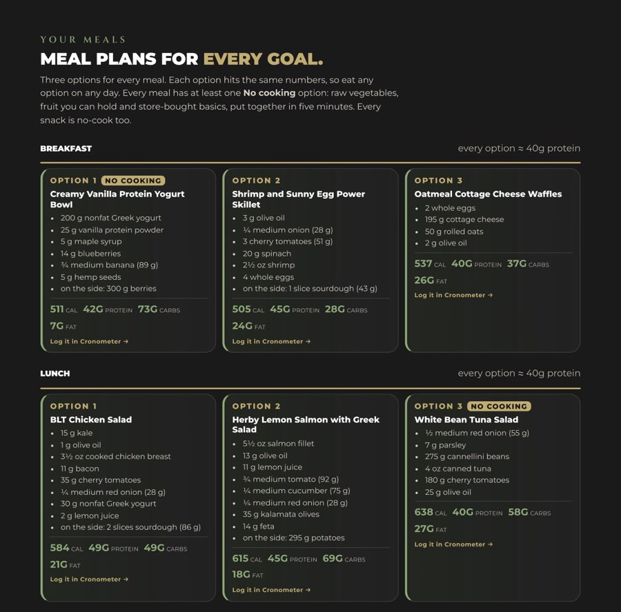
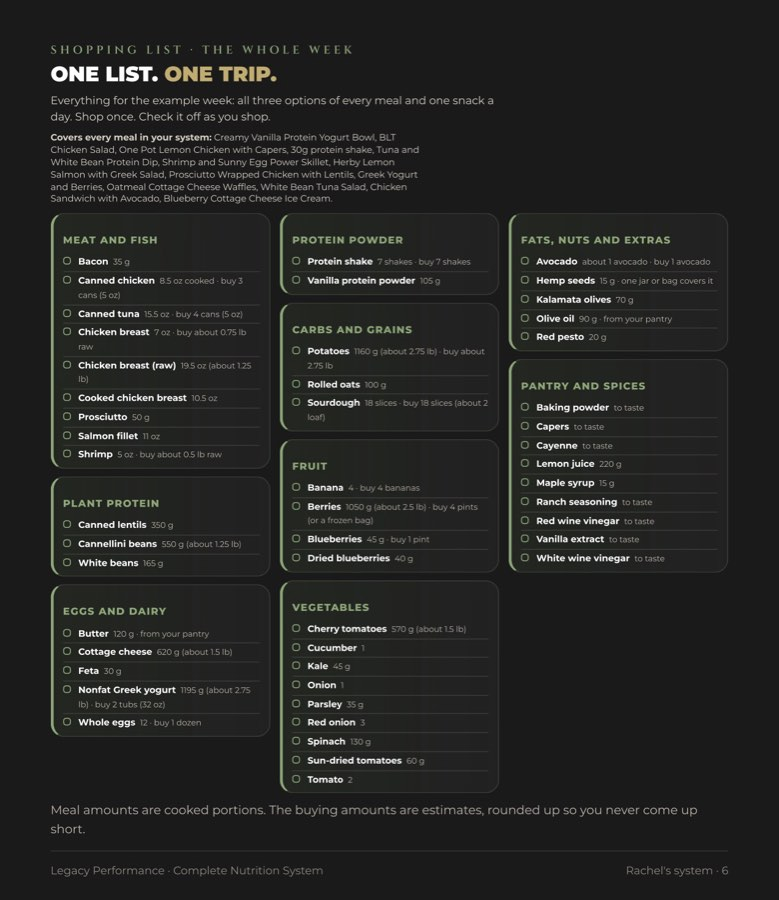
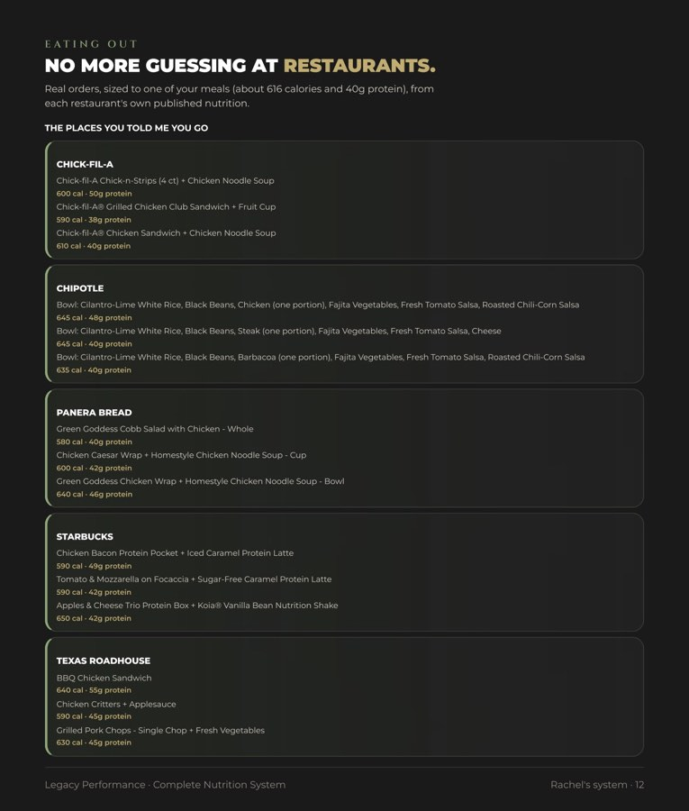
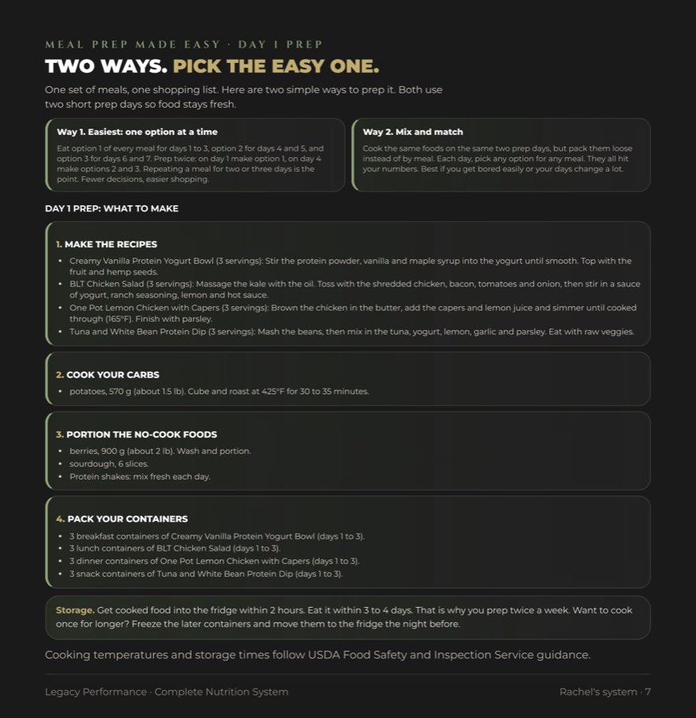
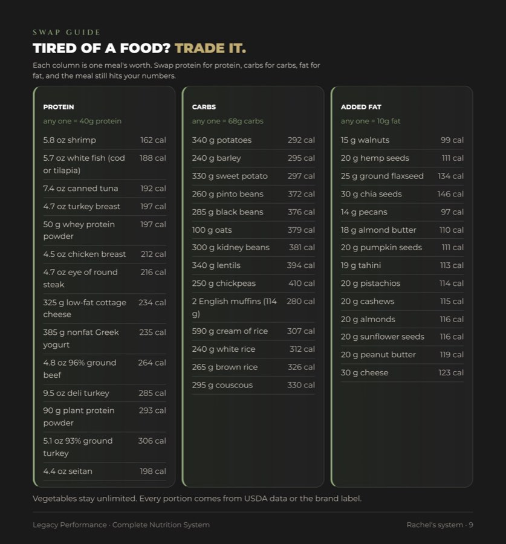
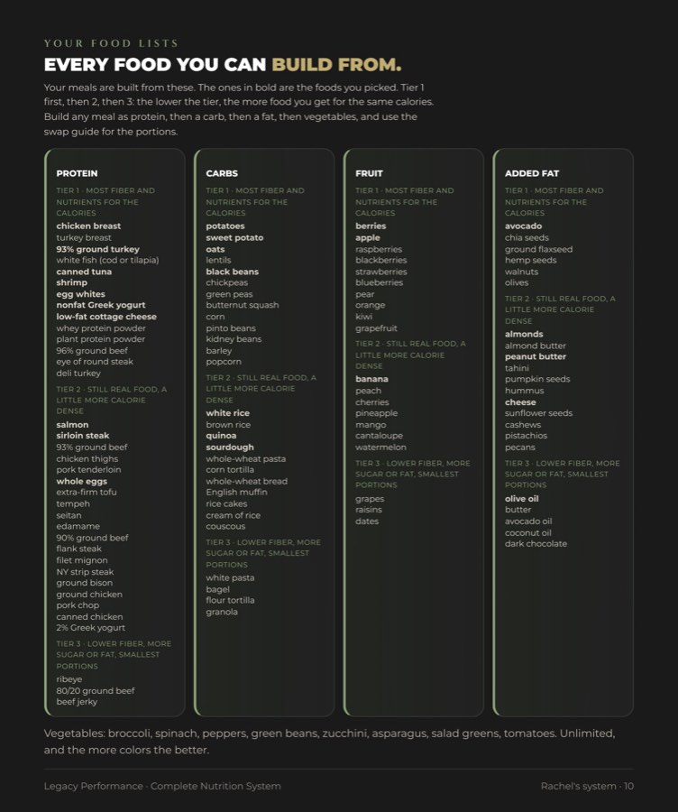
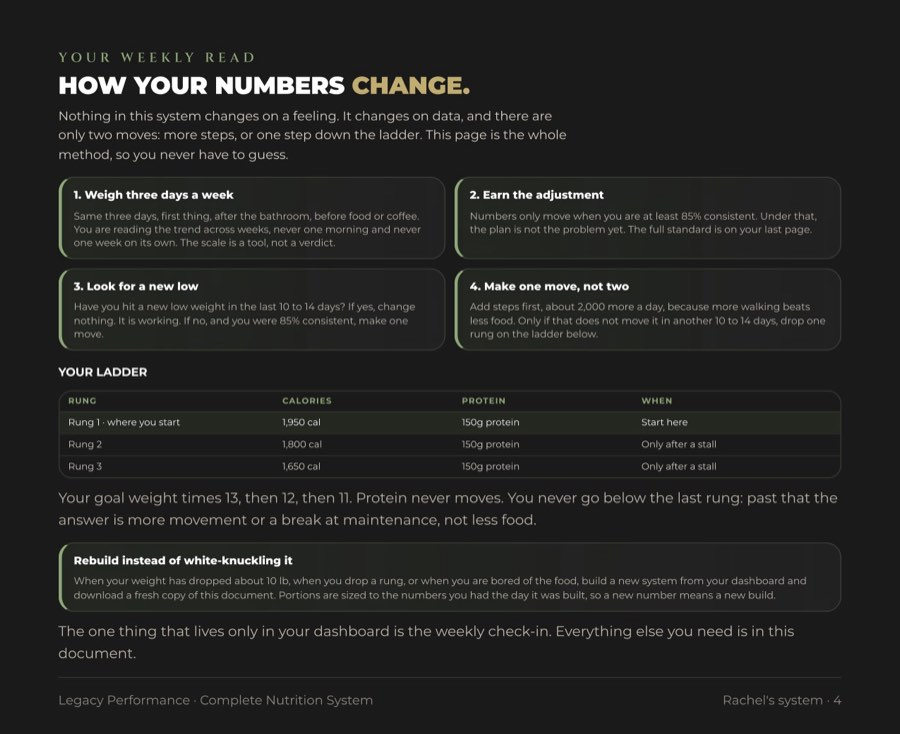

Built by Jayme Olson
Answer a few honest questions about your body, your training and the food you actually eat. You get your daily calorie target, your protein floor, your macros and the pace you can really expect — calculated on screen as you go. No card, no payment. About five minutes.
No payment to see your numbers. If you want the full system, with meal plans for life, your restaurant orders and your phases mapped, that is optional, and it’s $497. I set it up with you, step by step, and it is backed by a 30-day guarantee.




Real pages from a real build, not mockups. Tap any page to read it. Yours is built from your numbers and your food.
A note before you start
You have probably done this before.
More than once.
You ate less.
You moved more.
You white-knuckled it for a few weeks, it worked for a while, and then it stopped.
And somewhere in there you started believing the problem was you.
It was not you.
You run a household of five, a payroll, and the Sunday volunteer schedule.
None of that runs on willpower.
And breakfast is still the thing that beats you.
You do not have a discipline problem.
You have an awareness problem. Nobody ever taught you how to see the middle.
The middle is the food that never gets counted.
The oil in the pan.
The bites off your kid's plate.
The handful on the way past the counter.
It is also the other direction...
...the days you eat far less than you think and wonder why you have no energy by three in the afternoon.
You cannot fix what you cannot see.
And nobody ever handed you a way to look.
You run systems for everything else in your life.
Nobody ever built you one for your body.
That is what the questions below start.
They give me your numbers.
And they show you, honestly, where you actually are right now.
Answer them the way it really is, not the way you wish it was.
The honest version is the one that gets you moving.
Jayme
Functional Performance Coach
Who is building this
I started lifting at sixteen in a friend's garage and never really stopped. I spent about ten years coaching and competing in CrossFit, with bodybuilding and powerlifting either side of it. I competed at 185 pounds and I was genuinely high-performing. I could out-train almost anyone in the room.
And I still ended up at 242 pounds.
Because none of it touched the actual problem. I was raiding the pantry at midnight. I had tried keto, carnivore, Whole30, fasting, carb backloading, vegan, and every supplement with a label. I swung between bingeing and eating so "clean" that food became a source of anxiety on its own. Fitness was never my issue. Awareness was.
I am 188 now, below my wedding weight from nine years ago, and I have held it for years without a crash. Not because I found more discipline. Because I finally built a system that survives a real week instead of a motivated one.
I founded Legacy Performance in 2020 by reverse-engineering what my most successful clients actually did, then made it repeatable. That is the thing being built for you below.
So no, I am not coaching you from above this. I am handing you the map I needed twenty years ago and did not have.
Real people. Real numbers.
Almost every one of them came in eating too little and doing too much cardio. Every one of them ate more and trained less but smarter. These are their numbers, not a promise about yours.
140 → 122 lbs, and a pro card.
Training cut to three days a week for recovery. Calories raised to about 2,000 a day by show day. Walking the dog was the only cardio. She is 54 and still eats waffles with her husband every Saturday.
313 → 296 lbs in 12 weeks.
Nothing about her supplementation changed. Everything around it did. She is a mother first and a director second, and that order never moved. Her fat loss lived in the margins of both.
About 25 lbs across a year.
The only story here where the move that finally worked was doing less. When her body started fighting back they took a break, adjusted her eating schedule, and pulled training back rather than pushing harder.
1,400 → about 2,500 calories a day.
She came in eating like a bird, fasting, and had lost her cycle. Calories went up on purpose over months. Her cycle came back and she can track food again without sorting it into clean and dirty.
About 15 lbs in six months.
Ate 1,800 to 2,000 calories, trained three to five times a week, and kept the wine and the dessert. The bigger win was walking away with almost every food restriction gone.
165 → 162 lbs, which badly undersells it.
Calories going up, muscle going on, body fat coming down at the same time. The real wins she reported were less inflammation, less joint pain, and harder training than she had managed in a long time.
And mine, because you should know I have actually done this. 242 lbs down to 188, below my wedding weight, held for years. I came out of binge eating and orthorexia to get here. I am not coaching you from a place I have never stood.
Your nutrition system
These are your numbers. Your calorie target, your protein floor, and your phase.
Here is the part nobody tells you though.
A number on its own does not change anything.
What it means for your body, your season, and the very first move you make with it. That is where this turns real.
You have had plans before. You have probably had six of them. Information was never your problem.
You could not see the middle, and nobody ever sat down and showed you how to look.
What you are actually getting
A meal plan only gets you to one goal. What we are building gets you to any goal.
Lose fifty pounds.
Build five pounds of muscle.
Improve your blood work.
Live longer, and still be strong at seventy.
Those are four different plans at four different numbers.
A meal plan is one answer, on one day, at one calorie number.
It is right until your body changes...
...and then it is a PDF you feel guilty about.
A diet is not a system. It is a to-do list with an end date.
That is why you can finish six of them and still have nothing you can run today.
Think about how you run your money.
Your budget answers four questions.
A diet answers one.
Your budget: every dollar in and out. A diet: “eat clean.”
Your calories, your protein floor and your macros, plus a week of meals built from food you already like. Three options for every meal, so the plan bends to your day instead of the other way around.
Your budget: once a week. A diet: whenever you work up the nerve to step on the scale.
You read your trend once a week instead of flinching at it every morning, and you forecast the week ahead with the dinner out and the glass of wine already in it. A forecast, not a daily verdict.
Your budget: move a line item. A diet: try harder.
A rule instead of a feeling: hold, adjust your portions, or move to the next phase. Lean Phase 1, 2 and 3 are mapped ahead of you, so a stall is a decision, not a crisis.
Your budget: it keeps running. A diet: nothing. It just ends.
Nothing ends. You move into maintenance, which is where it keeps running, not where it stops. Rebuild your meal plan any time anything changes. The button says build new meal plan, and it is yours for life.
Four questions.
Every answer is one you run yourself.
You do not need me standing over it, and I do not want you to.
That is the difference between a plan somebody hands you and a system that is yours.
What it looks like
This is an actual system, built for a 44 year old woman at 1,950 calories and 150g of protein, three meals and a shake. Yours is built the same way, from your numbers and your food. Tap any page to see it full size.




It arrives as one PDF you download and keep, and it lives in your dashboard so you can rebuild it any time.
The average person spends around $1,100 on a program in this category.
One time · No subscription · Yours for life
Want to spread it out? Choose Klarna at checkout and pay over time.
30 days. If it is not right for you, I will rebuild it or refund you. No argument.
Not ready to buy, but you want to talk it through first?
Book a Readiness ConsultationFree. Your numbers, your season, your best next step.
Common questions
Your plan is built from your answers using the same numbers I use with my one-on-one clients. Then I read it, adjust it, and finish it before it reaches you. The arithmetic runs itself, the same way your budget adds up the column for you. The judgment does not.
Every plan you have tried started with what to eat. This one starts with what is actually stopping you, which is usually not the food. If your constraint is that you cannot see your intake, a meal plan does not solve that. If your constraint is that your body has adapted down after years of cutting, a smaller deficit makes it worse. Naming the constraint first is the difference.
Then you are in a good place to start, because nothing has to be undone first. You learn the skill as you go. Nobody is expected to arrive already knowing how.
Your plan is generated immediately. I review and finish it, and it lands with you within 2 business days. You get access to your dashboard right away.
That is what the weekly auto-adjust is for. Your numbers are not carved in stone. Every week you get a read on your trend and your consistency, and one clear move. That is why it is a system and not a plan.
No. Three times a week on the same days is the standard, and you read the trend across weeks, not one morning. The scale is a tool, not a verdict. If you would rather not weigh at all, we use waist, neck, and thigh measurements monthly instead, and I will tell you honestly what data you give up by doing it that way.
No. This is educational coaching guidance based on my experience as a coach. It is not medical nutrition therapy, and it is not written or reviewed by a physician or registered dietitian. Talk to your physician before changing your diet, especially if you have a medical condition or take medication.
Thirty days. If it is not right for you, tell me and I will rebuild it, or refund you. You do not have to justify it.
What you are buying is the part that turns them into something you can actually run.
Build my system · $497